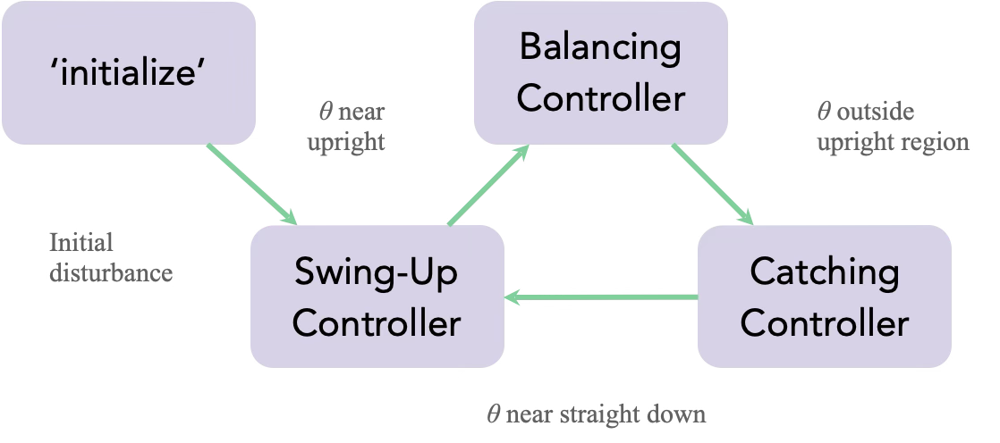

An ME155C hardware project combining model identification, LQR/LQG regulation, and logic-based mode switching for reliable swing-up, balance, and catch behavior.
The pendulum controller is structured as a state machine with three modes:
Swing-up: energy injection near zero-crossings to raise the pendulum with controlled velocity.
Balance: LQR/LQG around the unstable upright equilibrium.
Catch: LQR/LQG around the stable downward equilibrium to reset for the next swing-up.
Project objectives:
Reliable transitions between downward and upward equilibria.
Robust balancing near upright with disturbance recovery.
Repeatable catch/reset cycles without large cart drift.
Key balancing-state penalty weights used in the final design:
Balance LQR: diag([2000, 20, 10, 0.01])
Catch LQR: diag([8000, 10, 100, 0.01])
State order: angle, angular velocity, cart position, cart velocity.
System ID Pipeline
Experimental data was collected with a logarithmic sine sweep in approximately 0.3 to 3 Hz (MATLAB logspace-based sweep).
Parametric models were estimated with tfest over multiple trials (30 experiment trajectories in the report workflow).
Identified structure used a dominant integrator in cart dynamics plus a 3-pole/2-zero pendulum model, then reflected unstable dynamics for the upright operating point.
Kalman filtering in Simulink provided full-state estimates for the LQG loops used in balancing and catching.
State Machine Logic

Initialization routes into swing-up, balancing, or catching based on current configuration.
Controller Activation Regions
Visual diagram of where each controller is active in state space.
The final implementation consistently executed mode transitions and could recover from many failed balancing attempts by re-entering catch then swing-up.
Observed failure modes were tied mostly to extreme momentum events (cart rail impacts, fast swings) and encoder issues across full rotations, which could produce slow drift.
Planned improvements: stronger failure guards in the state machine and a small integral correction to reduce steady-state drift.